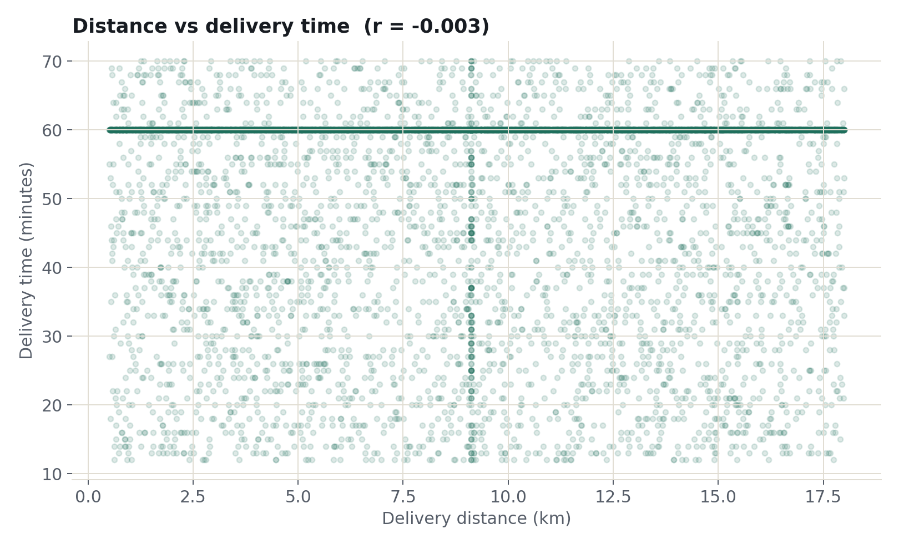
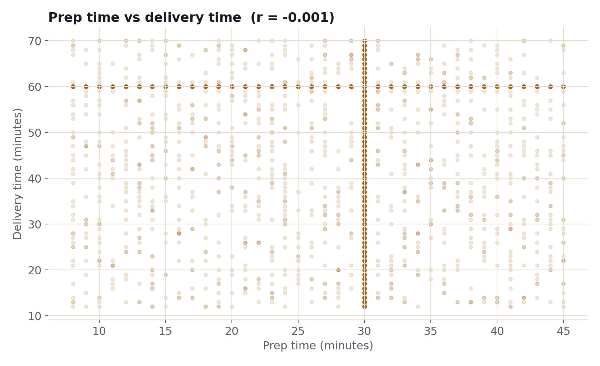
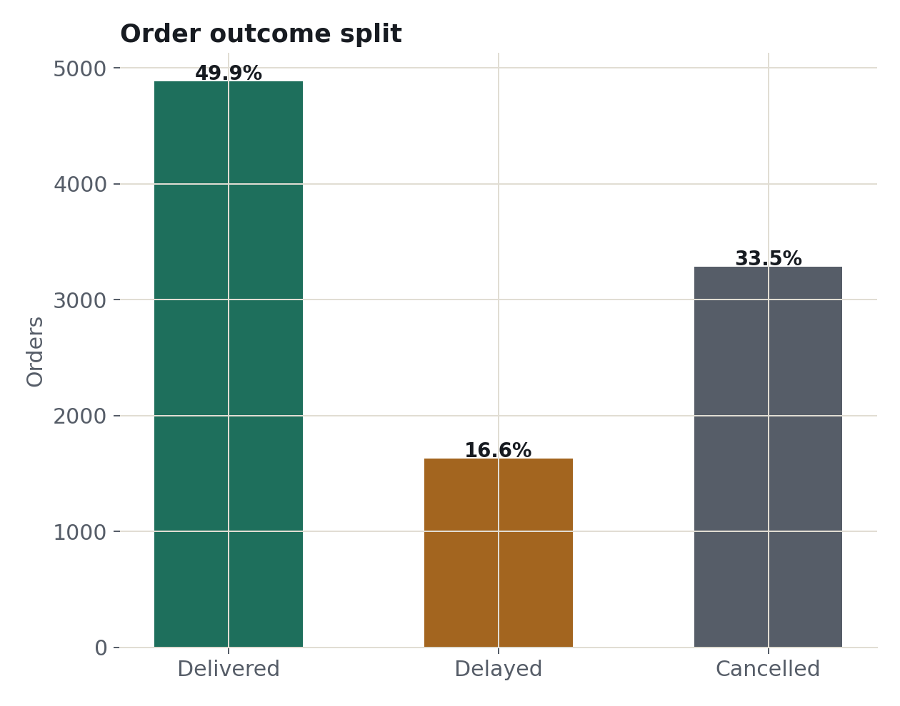
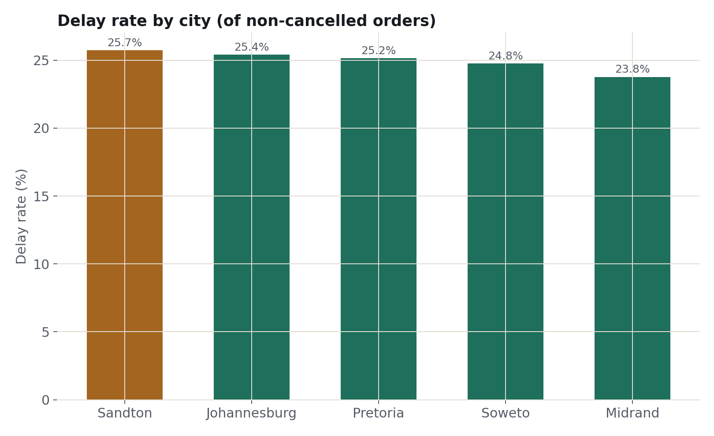
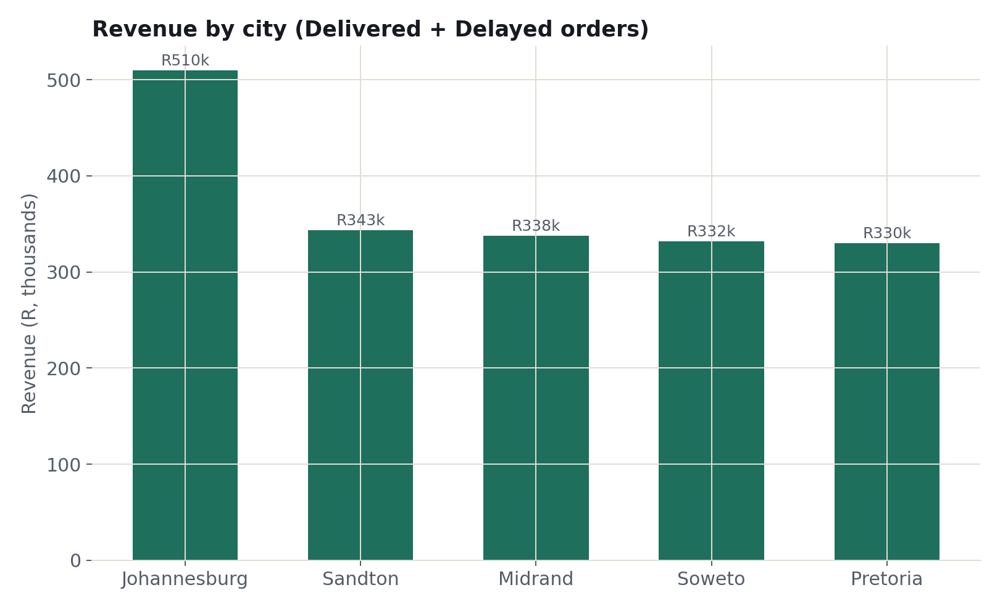
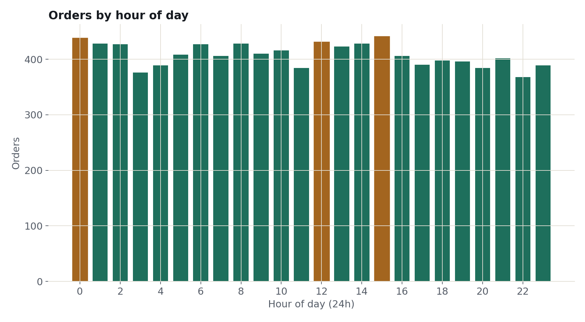

case_study.food_delivery_operations
Food Delivery Operations Analysis
A food delivery platform operating across five South African cities had 10,000 raw orders and no reliable answer to two questions: what actually makes a delivery slow, and why does roughly one in three orders cancel outright. This analysis ruled out the two obvious explanations and found the real cause was systemic, not local.
executive_summary
The business problem, in plain terms
A food delivery platform operating across Johannesburg, Sandton, Midrand, Soweto, and Pretoria had four months of order history and two operational questions nobody could answer with confidence: why do deliveries run slow, and why does roughly a third of every order get cancelled? The instinct on both was to blame the obvious suspects — delivery distance and kitchen prep time for the first, and city- or payment-specific issues for the second.
Neither instinct held up. Delivery time turned out to have no measurable relationship with distance or prep time at all — both correlations were statistically indistinguishable from zero, verified two independent ways. And the 33.5% cancellation rate was nearly identical across every city and every payment method, which rules out a local explanation and points to something systemic in how the platform operates.
That reframes the problem entirely. This isn't a routing or kitchen-speed issue that a faster driver or a faster kitchen would fix — it's a data-visibility problem. The platform doesn't currently capture the handoff points (dispatch, driver assignment) where delivery time is actually being lost, or the reason orders cancel in the first place. Closing those two blind spots is the highest-value next step, detailed in the recommendations below.
data_sources
What the data looked like going in
| Metric | Value |
|---|---|
| Rows | 10,000 raw → 9,793 cleaned |
| Columns | 15 raw → 21 cleaned (6 derived) |
| Cities | 5 — Johannesburg, Sandton, Midrand, Soweto, Pretoria |
| Restaurants | 8, each serving one distinct cuisine |
| Date range | 1 Jan 2026 – 1 May 2026 (4 months) |
| Currency | South African Rand (ZAR) |
| Tooling | Python, pandas, matplotlib, SQLite |
data_preparation
How the data was cleaned
Parsed two coexisting datetime formats
order_datetime mixed ISO and DD/MM/YYYY formats. Parsed both explicitly — 0 rows failed to convert.
Deduplicated 207 repeated order IDs
Each repeated order_id carried different data — a double-submit artifact, not identical rows. Kept the more complete row (fewest missing fields) per ID rather than an arbitrary "keep first." Rows: 10,000 → 9,793.
Standardized city and restaurant names
11 raw spellings of 5 cities (casing, "Mid rand", "JHB", "Johannesberg", "Pretori@") and 16 raw spellings of 8 restaurants collapsed via typo mapping and casing normalization.
Converted word-form numbers
Values like "sixty" in delivery_time_min and "four" in customer_rating were converted to numeric before any statistical work.
Imputed only where the missingness pattern justified it
Median fill for delivery_time_min, delivery_distance_km, and prep_time_min, where the median was stable across the whole dataset. Fields with no defensible fill value — payment_method (16.9% missing), promo_used (20.2%) — were labeled "Unknown" rather than guessed, since the known values split too evenly to impute a mode.
Verified every correlation two independent ways
Each headline correlation was computed via pandas .corr() and cross-checked with a direct SQL covariance/stdev calculation against the SQLite database. Both methods returned the same result before either was trusted.
exploratory_analysis
What the numbers show






key_findings
Findings, each backed by a number
Delivery time is statistically unrelated to both distance (r = -0.003) and prep time (r = -0.001) — the two factors an operations team would normally investigate first aren't the cause of slow deliveries.
33.5% of all orders cancel, at a rate nearly identical across every city (32.0%–34.8%) and payment method (32.5%–34.0%) — pointing to a systemic cause, not a local one.
Delay rate follows the same flat pattern across cities (23.8%–25.7%, a 1.9-point spread), reinforcing that this is a platform-wide issue.
No restaurant or cuisine dominates: order volume varies by only 8.5% and revenue by 9.6% across all eight restaurants.
Promo codes show no measurable lift — R284.35 average order value with a promo versus R283.87 without, a R0.48 difference against a standard deviation of roughly R124.
Order volume shows no daily, weekly, or time-of-day pattern across the 4-month window — an unusually flat demand curve for a food delivery platform.
business_impact
What the business should do about it
Trace a sample of cancelled orders to the exact point of cancellation, rather than treating it as a demand or marketing problem.
The current data can't show where delivery time is actually being lost. Timestamped handoffs would.
A platform-wide cause needs a platform-wide fix — piloting solutions city by city would waste effort on a problem that isn't local.
It shows no measurable return in this data — the spend may be better redirected toward the cancellation problem.
12.2% of orders carry no rating. A targeted, well-timed prompt would recover a meaningful share of that missing feedback.
Standardize city and restaurant name entry and require key fields at checkout, so future analysis needs fewer judgment calls.
downloads_and_repository